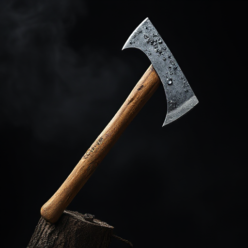
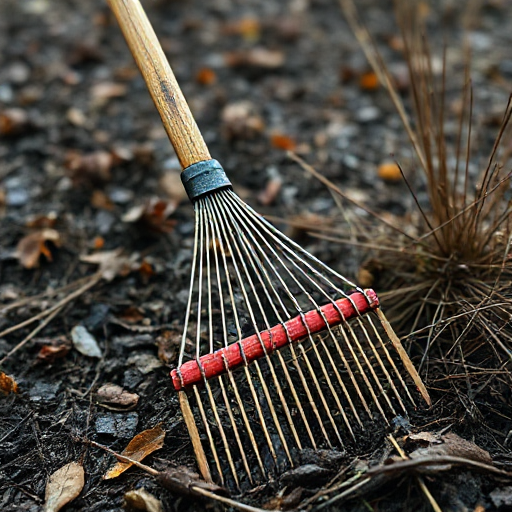
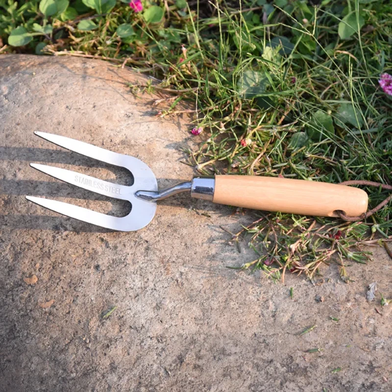
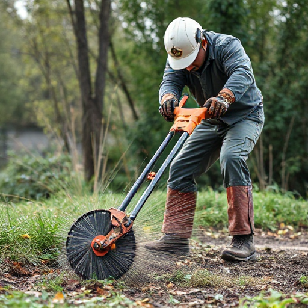

1. AXE
For all kinds of primary and advanced purposes, the axe is used and employed for agricultural operations. An axe is used for cutting purposes, this instrument helps cut heavy logs and other rigid substances. Moreover, the axe has a heavy head fixed on it with an edge parallel to the handle. The Axe is used to shape out, cut, harvest timber, and split out the huge logs. The sharp edge of the axe helps to easily cut the heavy and thick woods.importance and uses of Axe
These types of agricultural tools are so versatile that farmers can use them to clean the land and remove unwanted vegetation. It can easily chop down small trees, shrubs, or thick undergrowth. • Maintaining orchards, vineyards, or even large gardens often involves pruning or trimming plants and trees. An axe can be used for this job. • Farmers can use an axe agricultural tool as an implement and use it for soil tilling, ground preparation, and breaking down clumps.
2. RAKE
The rake is a crucial farm tool that is commonly utilized in agriculture for a variety of functions. The long handle of this handheld device has a set of teeth or tines connected to one end. Depending on the intended function and level of durability required, the tines may be constructed of metal, wood, or plastic. It is useful to gather, move, and level materials such as soil, leaves, grass, hay, or other debris. It is particularly useful for tasks like preparing soil beds, clearing debris from fields, spreading mulch, and maintaining the cleanliness of agricultural areas. Rakes come in different sizes and designs, each suited for specific purposes. Modern and large mechanized rakes are known as hay rakes and are made in various forms and origins. Star-wheel rakes and rotary are the other kinds. The price of rakes is inexpensive and pocket-friendly.importance and uses of rake
It is useful to gather, move, and level materials such as soil, leaves, grass, hay, or other debris. It is particularly useful for tasks like preparing soil beds, clearing debris from fields, spreading mulch, and maintaining the cleanliness of agricultural areas. Rakes come in different sizes and designs, each suited for specific purposes. When farmers need to spread materials like mulch, compost, or sand, rakes are useful for even distribution. Rakes are a great farming tool to own when one needs to control the weeds on the farming land as they help farmers uproot the small weeds easily
3. SHOVEL
This agricultural tool is used for digging, lifting, and removing bulk materials such as soil, coal, gravel, and snow out of the rugged layer of the soil. It is a hand-held tool that has a broad blade fixed to the end which sharply cuts down the soil and helps in the removal and cutting of the substances that are present on the land layer. The blades of the shovel are made up of strong steel and hard plastics that are robust and strong and make the work easy for farming.importance and uses of Shovels
Shovels are mainly used for digging and excavating soil. Farmers use these agriculture tools when they plant trees, shrubs, and crops, or for creating holes for fenceThey are useful for cleaning debris.

4. GARDENING FORK
Also known as a digging fork or spading fork it is widely used for digging purposes, improving the gardening land in a better way. The gardening tool consists of a handle and short or sturdy tines which are used more for leveling the garden soil with its sharp teeth. This agricultural equipment helps in loosening, lifting, and turning the soil that is required for crop rotation or blending the nutrients into the soil.Importance and Uses Of Gardening Fork
This agricultural equipment helps in loosening, lifting, and turning the soil that is required for crop rotation or blending the nutrients into the soil. • Gardening forks are effective for digging and turning the soil, particularly in larger areas. Farmers can use them to break down huge clumps of soil and incorporate organic matter according to their needs. They allow farmers to gently loosen the soil around the roots, making it easier to lift the crops out of the ground without damaging them. Farmers can use agricultural tools to move items like tools, fertilizers, compost, feed, or harvested crops from one location to another
5. Pruning Saw
To trim the trees and unwanted shrubs, a pruning saw is widely used. All varieties of Pruning saws are available in different sizes and shapes, but all of them have a hard point and heat-treated teeth. The pruning saw is one of the important agriculture tools to be used during farming as it is best suited for thick branches and thick stems. With its help, farmers can shape the crop and get rid of unwanted growth in no time.Importance and Uses Of Pruning Saw
• By pruning trees, pruning saw promotes proper growth and maintains their health and structure. Pruning saws provide precise and controlled cutting while minimizing damage to the surrounding tree tissue.
6. brush cutter
Brush cutters are agricultural tools that farmers mostly use to cut and clear weeds, brush, and other unwanted plants from the farmlands. They are manual and mechanized. Mechanized brush cutters are equipped with an engine ranging from 25cc to 40cc for two-stroke engines and up to 70cc for four-stroke engines. It has a cutting attachment that includes a trimmer head and blades. To perform different types of cutting activities seamlessly, there are different types of blades such as nylon blades, metal blades, and saw bladesImportance and uses of Brush Cutters
With the help of a brush cutter, it's easy to get rid of overgrown and unwanted crops or weeds. This ensures that the main crop is getting enough nutrients and is producing a higher yield. When farmers can prevent competition for water and nutrients, they can optimize the consumption of the resources. Farmers can use brush cutters to trim the edges of trees and maintain their landscapes.